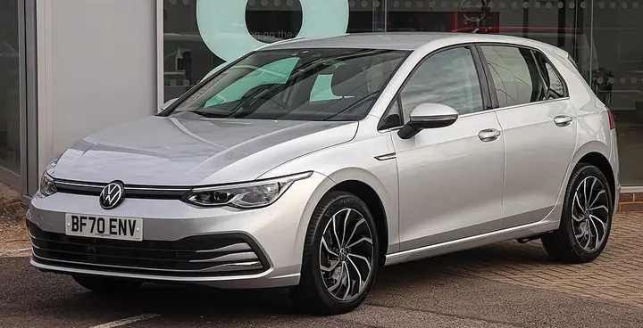
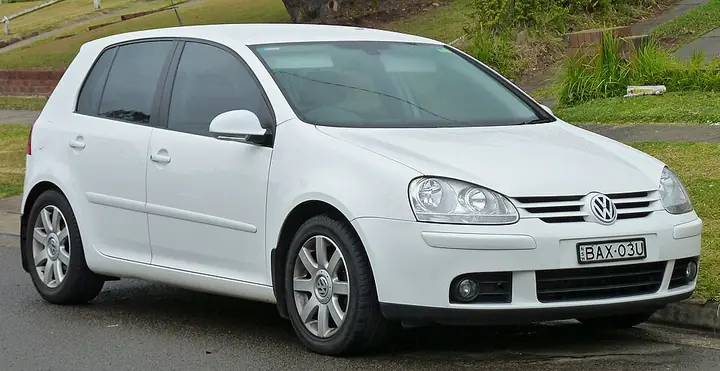
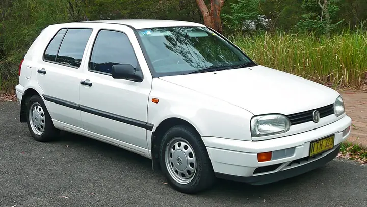
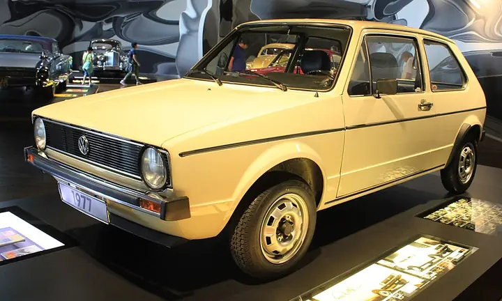

Volkswagen Golf
Eighth generation (Mk8, CD1; 2019) · 2019–present
Abstract
This generation of the Volkswagen Golf is a small family car (C), built 2019–present in Germany: Wolfsburg (Wolfsburg Volkswagen Plant), China: Foshan (FAW-VW, since 2020), Malaysia: Pekan (HICOM). Body styles: 5-door hatchback, 5-door estate. Layout: Front-engine, front-wheel-drive / four-wheel-drive (4motion). Designed by Klaus Zyciora and Felipe Montoya Bueloni, Klaus Zyciora and Felix Schell (estate). This generation has its own article: Volkswagen Golf Mk8.


Figures of the current version from the manufacturer: Volkswagen Golf price list and specifications (France), 2026-10.
1Specifications
| Trim levels | TrendLifeVW EditionStyleR-LineR-Line EditionGTEGTIGTI ClubsportR |
|---|---|
| Production | 2019–present |
| Model years | 2022–present (North America) |
| Assembly | Germany: Wolfsburg (Wolfsburg Volkswagen Plant)China: Foshan (FAW-VW, since 2020)Malaysia: Pekan (HICOM) |
| Designer | Klaus Zyciora and Felipe Montoya BueloniKlaus Zyciora and Felix Schell (estate) |
| Class | Small family car (C) |
| Body style | 5-door hatchback5-door estate |
| Layout | Front-engine, front-wheel-drive / four-wheel-drive (4motion) |
| Platform | Volkswagen Group MQB Evo |
| Engine | Petrol:1.5 TSI Evo2 116 ch (85 kW), 6-speed manualGTI 2.0 TSI 265 ch (195 kW), DSG7GTI Clubsport 2.0 TSI 300 ch (221 kW), DSG7R 2.0 TSI 4MOTION 333 ch (245 kW), DSG7Mild hybrid:1.5 eTSI 116 ch, DSG71.5 eTSI 160 ch, DSG7Hybrid:1.5 Hybrid 136 ch (100 kW)1.5 Hybrid 170 ch (125 kW)Plug-in hybrid:eHybrid 204 ch, DSG6GTE 272 ch, DSG6Diesel:2.0 TDI 116 ch, manual2.0 TDI 150 ch, DSG7 |
| Transmission | 5/6-speed manual6/7-speed DSG dual-clutch8-speed automatic |
| Battery | 25.7 kWh gross, 19.7 kWh net (eHybrid, GTE) |
| Electric range | 138–142 km WLTP (eHybrid)128–131 km WLTP (GTE) |
| Wheelbase | 2,620 mm |
| Length | 4,282 mm |
| Width | 1789 mm |
| Height | 1,483 mm |
| Weight | 1255–1465 kg |
| Related | Audi A3 Mk4SEAT León Mk4Škoda Octavia Mk4Volkswagen T-Roc Mk2 |
| Predecessor | Volkswagen Golf Mk7Volkswagen Beetle A5 |
2Driver assistance
- Travel Assist (SAE Level 2, optional, Mk8): Assisted driving up to 210 km/h: the car steers, accelerates and brakes, combining adaptive cruise control and lane keeping; the driver keeps monitoring. Source: Volkswagen Newsroom: the new Golf.
3Versions
- Golf GTE
- Golf GTD
- Golf GTI
- Golf GTI 380
- Golf R
- Golf R 333
- Facelift
4Previous generations



_Sportline_2.0_TDI_5-door_hatchback_(2010-07-05).jpg){kind=link}

_Petrol_-_Reflex_Silver_-_02-2025,_Front.jpg){kind=link}

_CL_5-door_hatchback_03.jpg){kind=link}



.jpg){kind=link}
5Generation by generation
Length +16% from the first to the last
Weight +59% from the first to the last